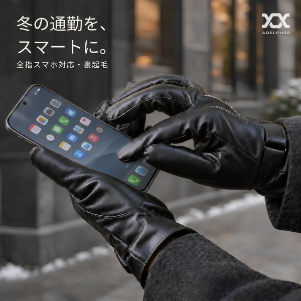
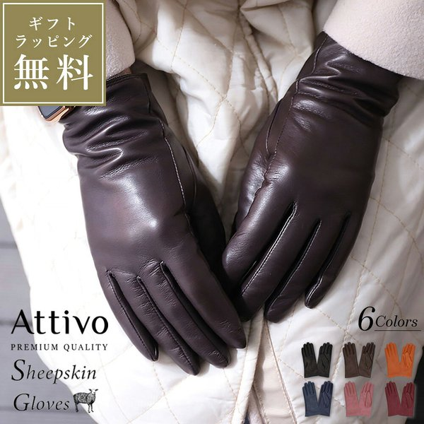
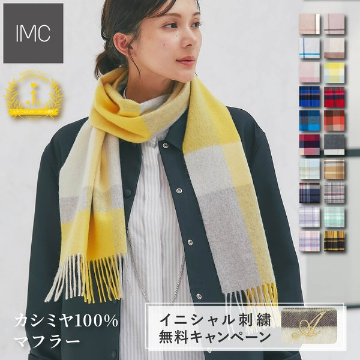
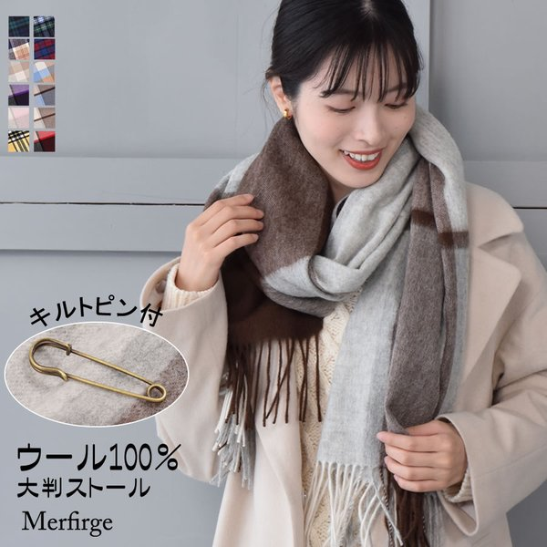
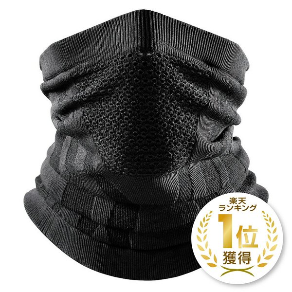
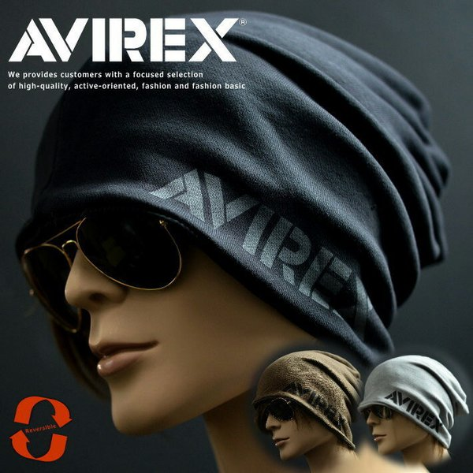
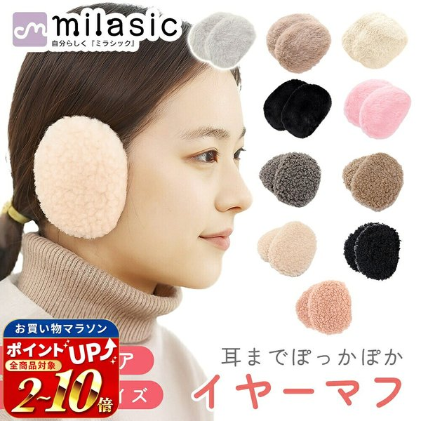
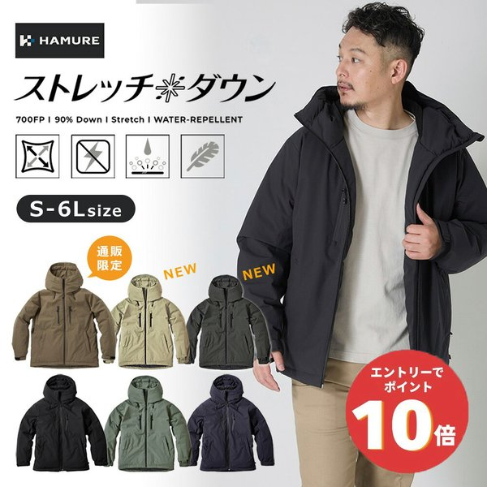
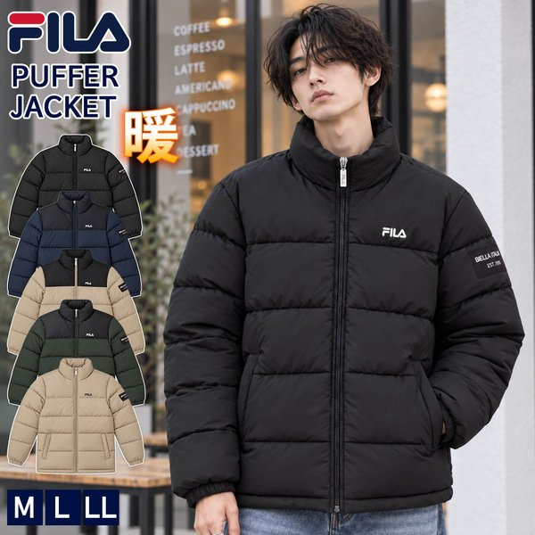
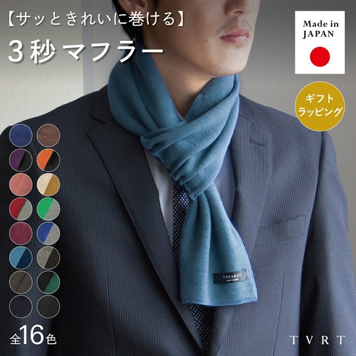

【2026年冬】通勤・お出かけの底冷えを防ぐ！スマホ対応手袋・カシミヤマフラー・ネックウォーマー＆防寒アウター10選
冬のつらさは、体の芯から冷えることより、指先・首・耳という「末端」から来ます。ここを塞ぐだけで、同じコートでも体感温度が変わります。
選ぶ軸は、スマホを触れるか、締め付けがないか、そして洗濯できるかです。手袋は全指がタッチ対応のものを選ぶと、外す回数が減って指先が冷えません。首元は、マフラー・ストール・ネックウォーマーの3種類で役割が違います。マフラーはコートの襟元を飾り、ストールは肩まで覆え、ネックウォーマーは巻き直さずに被るだけ。通勤の自転車やバイクなら、防風のネックウォーマーが快適です。アウターは、ダウンのフィルパワーと中綿の手入れのしやすさで選び分けます。ダウンは軽くて暖かく、中綿は洗濯が簡単。ニット帽とイヤーマフは、帽子で髪が崩れる日の代替になります。
本記事では、楽天市場で人気・高評価の大人向け防寒小物とアウター10選を、実売価格とレビュー評価つきで写真付き紹介します。
- おすすめ10選 スペック・特徴比較表
- BEST 1｜メンズ スマホ対応手袋（全指対応・裏起毛・PUレザー）
- BEST 2｜レディース スマホ対応 革手袋（羊革・6色／3サイズ）
- BEST 3｜カシミヤ100% マフラー（チェック柄・30×180cm・刺繍無料）
- BEST 4｜ウール100% 大判ストール（チェック柄・キルトピン付）
- BEST 5｜ネックウォーマー メンズ（裏起毛・防風・フェイスカバー）
- BEST 6｜ニットキャップ（メンズ・レディース兼用）
- BEST 7｜イヤーマフ（ボア・収納袋付き・軽量）
- BEST 8｜ストレッチダウンパーカー HMU-2632（700FP・撥水・フード付き）
- BEST 9｜中綿ジャケット メンズ FH7768（軽量・防寒）
- BEST 10｜3秒マフラー メンズ（薄手・日本製・16色）
- 【読者負担0円】買わなくても得する無料サービス
- まとめ：冬の防寒小物とアウター10選の選び方
| 順位 | 商品名 | ブランド | 最大の特徴・おすすめ理由 | 総合評価 |
|---|---|---|---|---|
| BEST 1 | メンズ スマホ対応手袋（全指対応・裏起毛・PUレザー） | ADELPHOS | 全指がスマホ操作に対応 | 4.24 |
| BEST 2 | レディース スマホ対応 革手袋（羊革・6色／3サイズ） | Attivo | 羊革の柔らかい肌触り | 4.52 |
| BEST 3 | カシミヤ100% マフラー（チェック柄・30×180cm・刺繍無料） | IMC | カシミヤ100%の軽さと暖かさ | 4.57 |
| BEST 4 | ウール100% 大判ストール（チェック柄・キルトピン付） | Merfirge | ウール100%の大判サイズ | 4.59 |
| BEST 5 | ネックウォーマー メンズ（裏起毛・防風・フェイスカバー） | KYOSER | 裏起毛＋防風で冷気を防ぐ | 4.61 |
| BEST 6 | ニットキャップ（メンズ・レディース兼用） | AVIREX | 厚手ニットで耳まで覆える | 4.54 |
| BEST 7 | イヤーマフ（ボア・収納袋付き・軽量） | milasic | 1,000円で買える | 4.02 |
| BEST 8 | ストレッチダウンパーカー HMU-2632（700FP・撥水・フード付き） | ハミューレ（HAMURE） | 700FPのダウンで軽く暖かい | 4.61 |
| BEST 9 | 中綿ジャケット メンズ FH7768（軽量・防寒） | FILA | 中綿で手入れが簡単 | 4.29 |
| BEST 10 | 3秒マフラー メンズ（薄手・日本製・16色） | TAVARAT | 通すだけで3秒で装着 | 4.62 |
メンズ スマホ対応手袋（全指対応・裏起毛・PUレザー）

指先までタッチパネルに対応した、メンズ用のPUレザー手袋です。全指がスマホの操作に対応するので、手袋を外さずに地図を見たり、メッセージを返したりできます。内側は裏起毛で、防風・撥水加工。通勤の自転車やバイクでも、手がかじかみません。革に見える質感なので、コートやジャケットにも合わせやすい見た目です。楽天市場での実売価格は約1,680円（2026年11月時点）。
- 全指がスマホ操作に対応
- 裏起毛・防風・撥水
- 1,680円で通勤用に買いやすい
- レビューは665件で、PUレザーのため本革よりは傷みが早い
レディース スマホ対応 革手袋（羊革・6色／3サイズ）

羊革（シープスキン）を使ったレディース用の革手袋です。手に沿う柔らかい革で、指先はスマホのタッチ操作に対応しています。色は6色、サイズは3サイズから選べ、手の小さめな人でも合わせやすいのが特徴です。ラッピングが無料なので、そのままギフトとして渡せます。コートの袖口から革手袋が見えるだけで、冬の装いが一気に整います。楽天市場での実売価格は約5,380円（2026年11月時点）。
- 羊革の柔らかい肌触り
- 6色／3サイズから選べる
- ラッピング無料でギフトにも
- レビューは129件で、革手袋は雨の日に濡らすと型崩れしやすい
カシミヤ100% マフラー（チェック柄・30×180cm・刺繍無料）

カシミヤ100%のマフラーで、サイズは30×180cm。首に2回巻いても長さに余裕があります。チェック柄なので、コートが無地でも首元に柄が入って表情が出ます。イニシャル刺繍が無料で入れられるため、名前を入れて贈り物にもできます。カシミヤは軽くて保温性が高く、厚手のウールより肩が凝りにくいのが利点です。楽天市場での実売価格は約6,490円（2026年11月時点）。
- カシミヤ100%の軽さと暖かさ
- イニシャル刺繍が無料
- レビュー1,398件の定番
- レビューは1,398件で、カシミヤは毛玉が出やすいのでケア用品も用意する
ウール100% 大判ストール（チェック柄・キルトピン付）

ウール100%の大判ストールで、肩にかけて膝掛けのようにも使えます。チェック柄で、コートの上から羽織ると冬の装いの主役になります。キルトピンが付属するので、ずり落ちを気にせず留められます。ウールは保温性が高く、薄手でも風を通しにくいため、室内の暖房が強い場所では外して調整できます。楽天市場での実売価格は約2,900円（2026年11月時点）。
- ウール100%の大判サイズ
- キルトピン付きでずれにくい
- 2,900円で試しやすい
- レビューは316件で、ウール特有のチクチク感が苦手な人もいる
ネックウォーマー メンズ（裏起毛・防風・フェイスカバー）

首元からあご、耳までを覆えるネックウォーマーです。内側は裏起毛で、防風・保温性が高く、バイクや自転車の走行中でも冷気が入りにくい設計。伸縮性があり、息苦しさを抑える通気性も確保しています。UVカット付きなので、日中の屋外でも使えます。マフラーと違って巻き直す必要がなく、通勤時にさっと被るだけで済みます。楽天市場での実売価格は約1,480円（2026年11月時点）。
- 裏起毛＋防風で冷気を防ぐ
- 伸縮性があり息苦しくない
- UVカット付き
- レビューは367件で、バイク用のため普段使いにはやや厚手
ニットキャップ（メンズ・レディース兼用）

ミリタリー系ブランドAVIREXのニットキャップです。厚手のニットで耳まで覆え、真冬の通勤でも頭から冷えません。ブランドロゴがワンポイントで入り、ダウンやコートに合わせても野暮ったくならないのが利点。男女兼用のデザインなので、家族で共有もできます。帽子は1つあるだけで、朝の髪のセットに使う時間が減ります。楽天市場での実売価格は約3,580円（2026年11月時点）。
- 厚手ニットで耳まで覆える
- AVIREXのロゴ入り
- メンズ・レディース兼用
- レビューは162件で、厚手のため蒸れやすく、室内では脱ぎたくなる
イヤーマフ（ボア・収納袋付き・軽量）

耳だけを覆うイヤーマフで、ボア素材の肌触りがよく、締め付けが少ない設計です。帽子をかぶると髪が崩れる、マフラーは巻くのが面倒、という人に向いています。付属の収納袋に入れれば、バッグのすき間にしまえます。1,000円で、通勤・通学の自転車や、屋外のイベントで耳を守れます。楽天市場での実売価格は約1,000円（2026年11月時点）。
- 1,000円で買える
- ボア素材で締め付けが少ない
- 収納袋付きで持ち歩ける
- レビューは797件で、評価は4.02と他の防寒小物よりやや低め
ストレッチダウンパーカー HMU-2632（700FP・撥水・フード付き）

700フィルパワーのダウンを詰めたメンズ用ダウンパーカーです。ストレッチ性のある生地で、車の運転や自転車でも動きを妨げません。表面は撥水加工で、急な雨や雪をはじきます。フード付きで襟元まで覆えるため、マフラーなしでも首元が暖かく保てます。大きいサイズは6Lまで展開され、肩幅のある人も選べます。楽天市場での実売価格は約10,989円（2026年11月時点）。
- 700FPのダウンで軽く暖かい
- ストレッチ素材で動きやすい
- 6Lまで大きいサイズあり
- レビューは107件で、ダウンは圧縮すると保温性が戻りにくい
中綿ジャケット メンズ FH7768（軽量・防寒）

FILAのメンズ中綿ジャケットです。ダウンより手入れが簡単な中綿を詰め、軽量ながら風を通しにくい生地で仕上げています。ロゴが胸元に入り、スポーツ系のコートとして着られます。デニムにもスラックスにも合わせやすいので、通勤から休日まで1着で回せます。楽天市場での実売価格は約7,821円（2026年11月時点）。
- 中綿で手入れが簡単
- 軽量で着膨れしにくい
- FILAのロゴ入り
- レビューは38件と少なく、真冬の屋外ではインナーで調整が必要
3秒マフラー メンズ（薄手・日本製・16色）

輪になった筒状のマフラーを首に通すだけで、3秒で巻き終わるショートマフラーです。日本製で、薄手なのでコートの襟元にもたつきません。色は16色から選べ、スーツやジャケットの色に合わせられます。朝の忙しい時間に、巻き直す手間なく首元を暖めたい人に向いています。楽天市場での実売価格は約4,200円（2026年11月時点）。
- 通すだけで3秒で装着
- 日本製・薄手で襟元がすっきり
- 16色から選べる
- レビューは185件で、薄手のため真冬の屋外では物足りない
この記事の商品を買う前に、まずは無料で得する選択肢をチェック。どれも登録・利用は0円で、無料期間中に解約すれば料金はかかりません。読みたい雑誌がある人、ポイントを貯めたい人、アンケートなら気軽という人、それぞれに合うものを選べます。
初回31日無料・無料期間中に解約すれば0円 → 楽天ポイントモール｜登録無料で毎日ポイ活
買い物なしでもポイントが貯まる無料サービス → 楽天インサイト｜アンケートに答えてポイント
登録無料・すきま時間のアンケートで貯まる → 楽天カード｜年会費永年無料
新規発行・年会費ずっと0円 →
4つのサービスの違いと使い分けは「出費0円で得する！買わずにポイントが貯まる無料サービス厳選4選」でまとめています。
💡 まとめ：冬の防寒小物とアウター10選の選び方
冬の装いは、高いアウターを買うより、末端を塞ぐほうが効きます。まず手袋を、全指スマホ対応のものに替えてください。手袋を外してスマホを触る時間がなくなるだけで、指先の冷え方が違います。次に首元。スーツなら薄手のショートマフラー、カジュアルならカシミヤやウールの大判ストール、自転車やバイクなら防風のネックウォーマーが向いています。耳は、帽子で髪が崩れる人こそイヤーマフが便利です。アウターは、軽さを優先するならダウン、洗濯のしやすさを優先するなら中綿を選んでください。小物は色を揃えると、コートが1着でも毎日違う装いに見えます。まずは手袋とマフラーから、1点ずつ買い替えていけば十分です。
楽天市場では「5と0のつく日」や「お買い物マラソン」などのキャンペーンに合わせて購入すると、ポイント還元が最大化してお得に手に入ります。ぜひチェックしてみてくださいね。